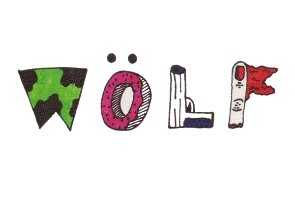
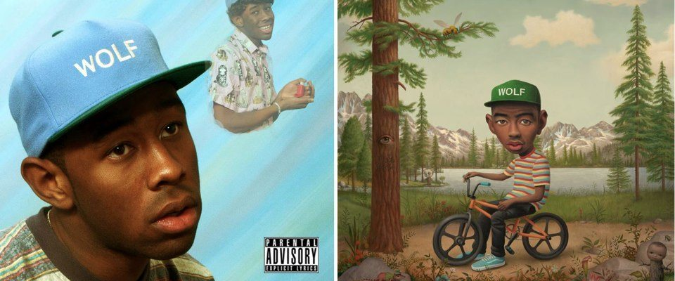

Muitos fãs do Rap/Hip-Hop já devem conhecer o grande artista Tyler, The Creator, famoso por seus infames álbuns que tem feito desde 2009. Mas aqui mostrarei quem é esse artista e um dos seus famosos álbuns.
Wolf é mais do que apenas um álbum; é uma jornada através do mundo complexo e multifacetado de Tyler, The Creator. Com sua produção ousada, letras introspectivas e uma narrativa envolvente, Wolf é um testemunho do talento e da visão artística de Tyler. Para quem busca uma experiência musical única e desafiadora, Wolf é uma obra essencial para explorar e apreciar a genialidade de Tyler, The Creator.
Tyler, The Creator, nascido Tyler Gregory Okonma, em 6 de março de 1991, em Ladera Heights, Califórnia, é um artista multifacetado, conhecido principalmente como rapper, produtor musical e designer, além de ser uma figura influente na música e na cultura pop contemporânea.
Tyler não se conforma com o status quo. Desde seus primeiros dias como líder do coletivo Odd Future, Tyler tem sido uma força criativa que desafia normas e explora novas direções na música. Seu estilo é uma fusão de influências variadas, desde o rap alternativo até o experimentalismo sonoro, o que faz dele um artista verdadeiramente único.
Tyler começou sua jornada musical na adolescência e ganhou reconhecimento como o fundador do coletivo Odd Future Wolf Gang Kill Them All (OFWGKTA). Esse grupo é famoso não só pela música, mas também por seu impacto na cultura pop e sua influência no estilo de moda e na estética alternativa.
O estilo de Tyler é uma mistura intrigante de várias influências. Ele não se limita a um gênero; seus álbuns vão do rap agressivo ao R&B melódico e até ao jazz. Essa versatilidade se reflete em seu trabalho como produtor, onde ele também cria beats que são muitas vezes imprevisíveis e inovadores.
Em termos de personalidade, Tyler é conhecido por sua autenticidade e ousadia. Ele frequentemente explora temas profundos e pessoais em suas músicas, misturando humor e introspecção. Ele também é um pouco de provocador, desafiando convenções e abordando questões que podem ser desconfortáveis ou controversas.
Tyler não é apenas um músico. Ele também é um designer talentoso e tem sua própria linha de roupas chamada Golf Wang, que é conhecida por seu estilo vibrante e irreverente. Além disso, ele já lançou projetos no cinema e tem um programa de rádio, mostrando que sua criatividade se estende para além da música.
Com o tempo, Tyler evoluiu muito, passando de um artista underground para um influente na cena musical mainstream. Seu trabalho evolui constantemente, e ele continua a surpreender e inspirar com sua visão única e estilo inovador.
Em resumo, Tyler, The Creator é um artista multifacetado que não se encaixa em uma caixa fácil. Ele é uma força criativa que continua a desafiar e expandir os limites da música e da moda.
Wolf é o terceiro álbum de estúdio de Tyler, The Creator, lançado em 25 de abril de 2013. O álbum marca uma evolução na carreira de Tyler, com uma abordagem criativa e eclética que mistura hip-hop, R&B, funk e soul. Wolf é conhecido por sua produção inovadora e pela exploração de temas pessoais e introspectivos, refletindo a habilidade de Tyler em criar uma narrativa musical única. A criação do álbum envolveu uma série de colaborações e uma abordagem conceitual que destaca a identidade multifacetada do artista.
Conceito e Temática: Wolf explora temas de autoidentidade, crescimento pessoal e relacionamentos. O álbum tem um conceito de "persona" com Tyler apresentando várias facetas de sua personalidade. Há também uma narrativa contínua que se desdobra ao longo das faixas.
Produção e Estilo: Tyler, The Creator é conhecido por sua abordagem única à produção musical, e Wolf não é exceção. O álbum é caracterizado por batidas experimentais, arranjos complexos e uma abordagem musical distintiva que mistura elementos de hip-hop, R&B e outros gêneros.
Colaborações: O álbum conta com várias colaborações notáveis, incluindo artistas como Erykah Badu, Pharrell Williams, e Tyler também faz parcerias com outros membros do coletivo OFWGKTA (Odd Future Wolf Gang Kill Them All), como Earl Sweatshirt e Domo Genesis.
Faixas Notáveis: Algumas das faixas mais destacadas do álbum incluem "Domo23," "Awkward," "Slater," e "Rusty." A música "Awkward" é especialmente notável por seu som mais suave e melódico, enquanto "Domo23" e "Slater" têm uma vibe mais agressiva e enérgica.
Recepção Crítica: Wolf recebeu críticas geralmente positivas, com elogios pela criatividade de Tyler e sua habilidade em criar uma obra musical coesa e diversificada. No entanto, como muitos álbuns de Tyler, o álbum também teve algumas críticas mistas, particularmente em relação às suas letras e ao estilo provocador.
Arte e Visuals: A capa do álbum, que mostra uma imagem ilustrativa de Tyler, The Creator como um lobo, é um exemplo do estilo visual único que ele frequentemente adota para seus projetos. A estética do álbum é um reflexo da identidade visual e artística que Tyler construiu ao longo de sua carreira.
1 - "Wolf" – 0:52
2 - "Jamba" (com participação de Hodgy Beats) — 3:32
3 - "Cowboy" — 3:15
4 - "Awkward" — 3:47
5 - "Domo23" — 2:41
6 - "Answer" — 3:50
7 - "Slater" (com participação de Frank Ocean) — 3:53
8 - "48" — 4:07
9 - "Colossus" — 3:33
10 - "PartyIsntOver/Campfire/Bimmer" (com participação de Lætitia Sadier & Frank Ocean) — 7:19
11 - "IFHY" (com participação de Pharrell Williams) — 5:20
12 - "Pigs" — 4:14
13 - "Parking Lot" (com participação de Casey Veggies & Mike G) — 3:55
14 - "Rusty" (com participação de Domo Genesis & Earl Sweatshirt) — 5:11
15 - "Trashwang" (com participação de Na'kel, Jasper, Lucas, L-Boy, Taco, Left Brain & Lee Spielman) — 4:42
16 - "Treehome95" (com participação de Coco O. & Erykah Badu) — 3:01
17 - "Tamale" — 2:46
18 - "Lone" — 3:56